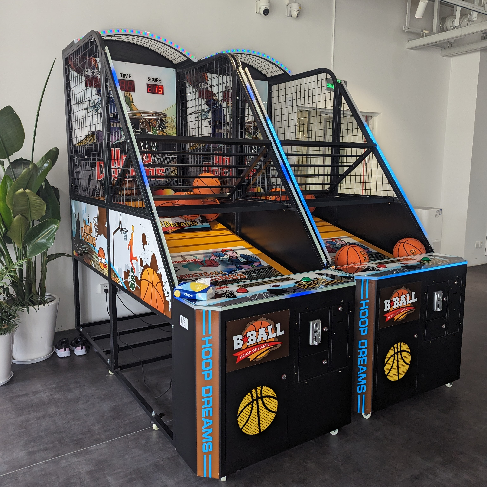
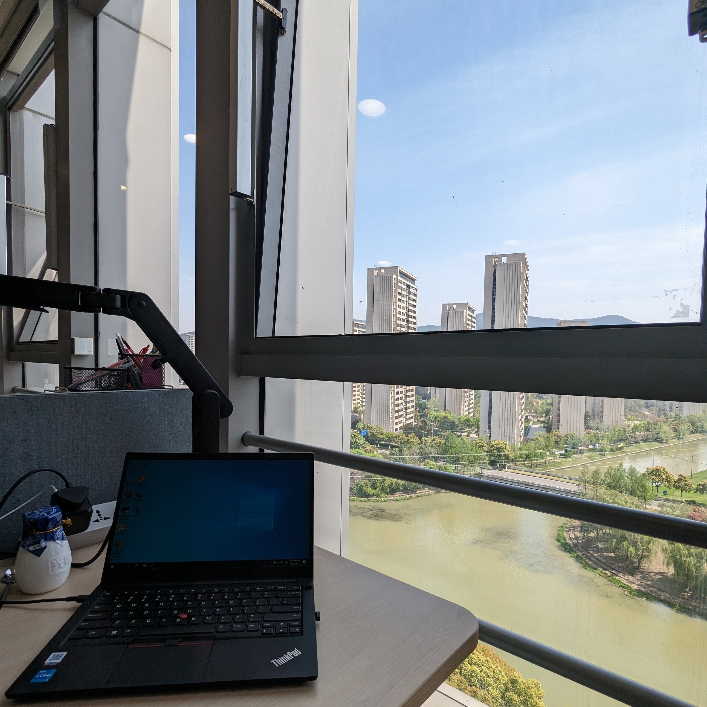
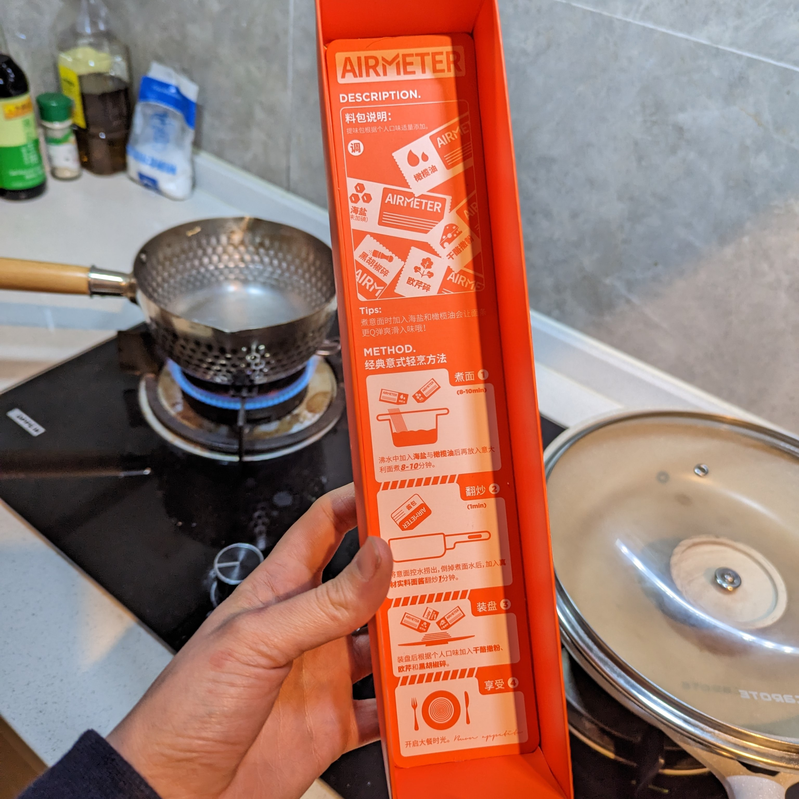
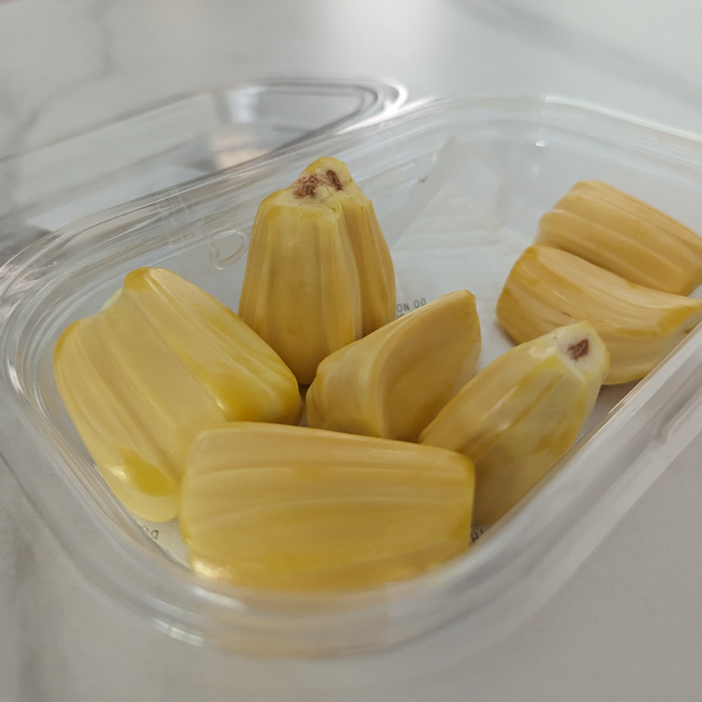
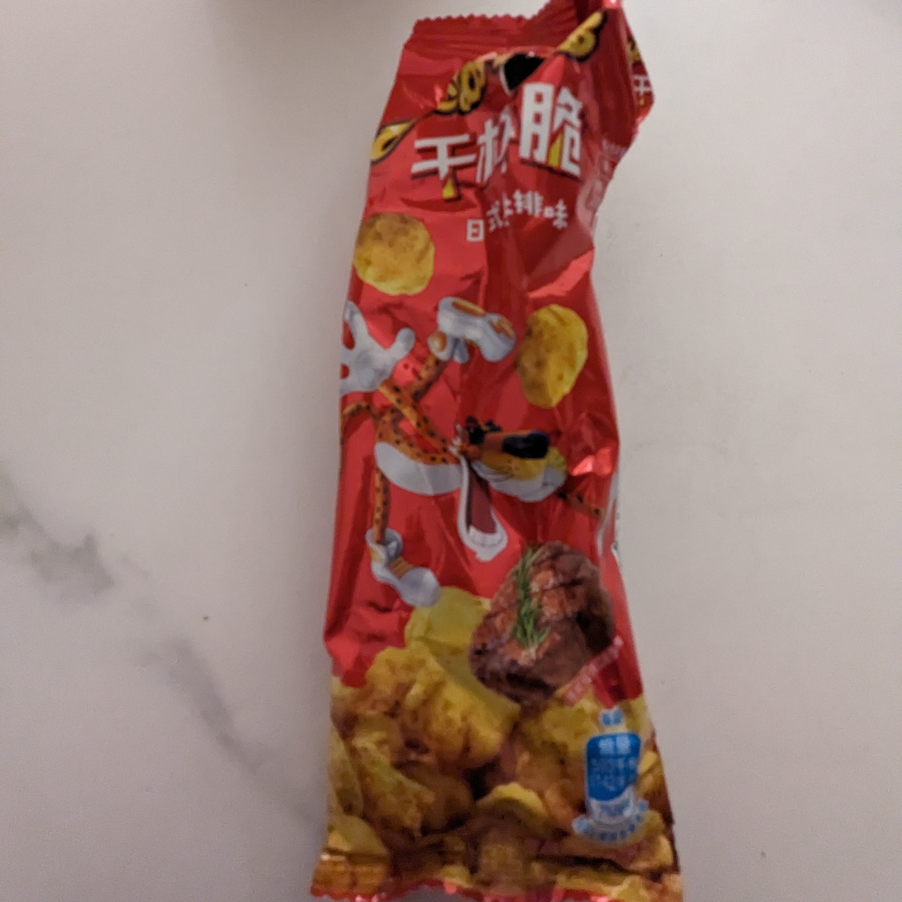

Cheers
12 April 2023
I was excited to try authentic Chinese barbecue, and the experience did not disappoint. The meat was succulent, juicy, and perfectly cooked, with just the right amount of seasoning. They ordered me an extra-large beer, which made me feel right at home. When I return home, I will have to be vegetarian for a few months to compensate. As we sat and talked, we were given cooling packs to stick to our foreheads to avoid overheating from the heat of the grill. I sipped on my beer, enjoying the flavor and the company, and feeling grateful for this new experience in a foreign land. In the end, I didn't manage to finish my beer, but the memory of that night will stay with me for a long time.
Authentieke Chinese barbecue stelde niet teleur. Het vlees was sappig, mals en perfect gekookt, met precies de juiste hoeveelheid kruiden. Ze bestelden voor mij een extra groot biertje, waardoor ik me meteen thuis voelde. Wanneer ik thuis kom ,moet ik maar een paar maanden vegetarier worden om te compenseren.Terwijl we zaten te praten kregen we koelpacks om op ons voorhoofd te plakken om te voorkomen dat we oververhit raakten van de hitte van de grill. Ik dronk van mijn biertje, genietend van de smaak en het gezelschap, en voelde me dankbaar voor deze nieuwe ervaring in een vreemd land. Uiteindelijk slaagde ik er niet in om mijn biertje op te drinken, maar de herinnering aan die avond zou nog lang bij me blijven.

Game On
11 April 2023
Who needs to go home when you can play basketball in the office? There's even a designated sports area, and I heard there's a group class on Friday afternoons. I'm still adjusting to the new time zone, but I've been able to get some decent sleep at night.
Waarom zou je überhaupt overwegen om naar huis te gaan als je in het kantoor kunt basketballen? Er is zelfs een speciaal aangewezen sportgedeelte en naar verluidt is er op vrijdagmiddag een groepsles. Ik moet nog steeds wennen aan de nieuwe tijdzone, maar ik heb al een paar redelijke nachten slaap gehad.

Office With a View
10 April 2023
Today was my first day in the office, which is located on the eighth floor of a building that houses several medical companies. The office is filled with bright sunlight and lots of green plants, and my desk is conveniently located right next to a window. There are plenty of snacks and excellent coffee available, and there's even a separate room where you can take a nap and two massage chairs. Most people arrive just after 9 a.m. and leave around 6 or 7 p.m., with a few exceptions. I also started working in the lab today, and I will continue my work there tomorrow. .
Vandaag was mijn eerste werkdag op kantoor, dat zich op de achtste verdieping van een gebouw bevindt waarin verschillende medische bedrijven zijn gevestigd. Het kantoor is gevuld met veel zon en veel groene planten, en mijn bureau staat handig naast een raam. Er zijn volop snacks en uitstekende koffie verkrijgbaar, en er is zelfs een aparte ruimte waar je kunt slapen en waarin twee massagestoelen staan. De meeste mensen komen net na 9 uur 's ochtends binnen en vertrekken rond 6 of 7 uur 's avonds, met enkele uitzonderingen. Ik ben vandaag ook begonnen met werken in het lab en zal daar morgen mee verdergaan.

What's in the box?
9 April 2023
Mengjie was incredibly kind to lend me a pan and even ordered some food for me. It was pasta in a box with the sauce inside a plastic package. I hope my Italian friends won't kill me. It wasn't bad, but a can of chopped tomatoes could have done the same job. Nevertheless, I'm very grateful to everyone who helped me get some food for the next few days.
Mengjie was zo vriendelijk om mij een pan te lenen en zelfs wat eten voor me te bestellen. Het was pasta in een doos met de saus in een plastic verpakking in plaats van een glazen pot. Ik hoop dat mijn italiaanse vrienden mij niet vermoorden terug in Londen. Het was niet slecht, maar een blikje gehakte tomaten hetzelfde werk had kunnen doen. Desalniettemin ben ik erg dankbaar voor iedereen die me heeft geholpen om wat eten te krijgen voor de komende dagen.
Home Away from Home
8 April 2023
I went for a walk on a Saturday morning after a good night's sleep. The area had twenty flats that all looked the same. The pavements had been cleaned that morning and everything looked very tidy.
Ik maakte op zaterdagochtend na een lange nachtrust een wandeling buiten het terrein. Er zijn 20 identieke flats in het gebied. 's Ochtends worden alle stoepen schoongemaakt, waardoor alles heel schoon is.

It's Fruit
8 April 2023
On Saturday morning, Grace stopped by to drop off some more food before she was heading off to Shanghai for the weekend. She was so kind! Among the goodies she brought was a type of fruit I had never seen before. I don't know its name, but I can say with confidence that it was a 10/10.
Op zaterdagochtend kwam Grace langs om wat meer eten af te leveren voordat ze vertrok naar Shanghai voor het weekend. Ze was zo aardig! Onder de lekkernijen die ze meebracht, zat een soort fruit dat ik nog nooit eerder had gezien. Ik weet niet hoe het heet, maar ik kan met vertrouwen zeggen dat het een 10/10 was.

A Snack
7 April 2023
On our way to the company, I snacked on some beef-flavored Cheetos. When I arrived, we attempted to set up my phone for my two-month stay in China. Unfortunately, none of the Chinese apps were compatible with my phone, which meant that I couldn't make any payments or order food. Luckily, Grace came to my rescue and kindly helped me get some food to last me through the weekend. Fortunately, the company will be providing me with a phone on Monday that I can use for the rest of my stay here.
Ik had deze rundvlees-cheetos als snack tijdens mijn reis naar het bedrijf. Bij aankomst probeerden we mijn telefoon in te stellen voor mijn verblijf hier de komende 2 maanden. Helaas bleken geen van de Chinese apps compatibel met mijn telefoon, wat betekende dat ik geen betalingen kon doen of eten kon bestellen. Gelukkig was Grace zo lief om me te helpen aan wat eten om het weekend door te komen. Het bedrijf zal me op maandag een telefoon geven die ik kan gebruiken voor de rest van mijn verblijf hier.
Ready for takeoff
6 April 2023
And so the adventure begins! After a long 12-hour flight, I finally landed in Shanghai. I didn't get much sleep on the plane, but I was fortunate enough to have friendly neighbors despite being one of the only Dutch people on board. Upon arrival, one of the company's drivers was waiting for me to pick me up from the airport and drive me to Suzhou.
En zo begint het avontuur! Na een lange vlucht van 12 uur landde ik eindelijk in Shanghai. Ik heb niet veel kunnen slapen in het vliegtuig, maar ik had gelukkig vriendelijke buren, ook al was ik een van de weinige Nederlanders aan boord. Bij aankomst stond een van de chauffeurs van het bedrijf op me te wachten om me op te halen van de luchthaven en me naar Suzhou te rijden.